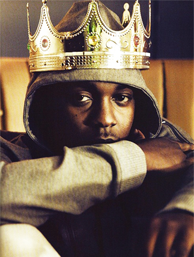

Last night, Big Sean released "Control," a track that won't make his upcoming album, Hall of Fame, due to sample-clearance issues. It's a seven-minute epic pulled along by a squeaky Spanish-language sample, with guest verses from a terse, confident Jay Electronica and an acrobatic Kendrick Lamar. The latter's endless-in-a-good-way rapping here expands from an intoned chant to a gravelly near-yell, delivering loaded lines wherein he declares himself "the King of New York"; places himself amid some of rap's all-time greats; and, via direct shout-outs, offers up a challenge to the rest of his straight-spitting generation: "Jermaine Cole, Big K.R.I.T., Wale / Pusha T, Meek Mill, A$AP Rocky, Drake / Big Sean, Jay Electron', Tyler, Mac Miller / I got love for you but I'm trying to murder you n*ggas." The verse immediately knocked everybody over.
But "Control" is not quite as impressive as it seems. There's a great deal of filibustering in Kendrick's verse: Far too much name-checking just to fill space (from Kurupt to Lindsay Lohan), and numerous lines that say the same exact thing in the same exact way. The chilling "I don't smoke crack, motherfucker, I sell it" sounds like a Compton cryptkeeper character straight out of his 2012 rap opera good kid, m.A.A.d city, but the idea is quickly abandoned. Such a rah-rah song could use some pathos, and Kendrick's great at that-pleasure-that-pain rapping, but only toward verse's end, when he conjures up an extended, absurdist image (skydiving out of a plane piloted by a drunk-ass old man) does the end result qualify as truly memorable and vivid. Sure, Kendrick's expert trolling of rap's gatekeepers is the big takeaway here, but you admire his balls in even attempting such a thing more than the writing itself. Contrast it with the sober Jay Electronica verse that immediately follows — with elemental conceit sustained throughout, every line building on the previous one and propeling his boasts forward — and Kendrick comes off as unfocused and slightly chaotic. "Control" is also a rap verse about how much he's killing it, even though he isn't killing it. It feels like an event because Kendrick tells you it's an event.
 @ammmble
@ammmble